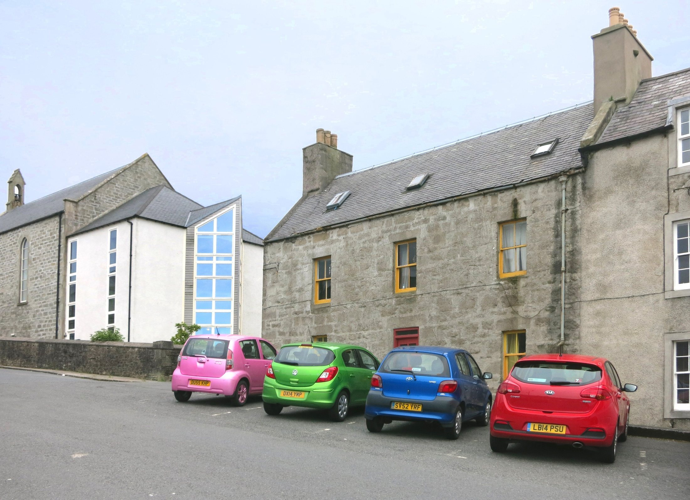
Cars Go!
Wheels, roads, and rides

Wheels, roads, and rides
This is a car. A car has wheels. It carries people on roads.
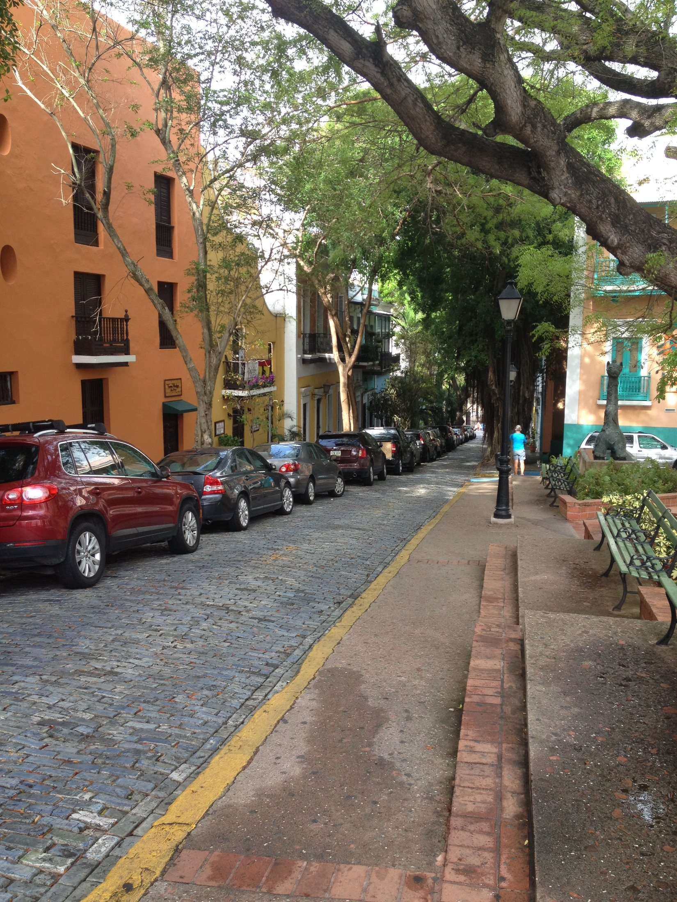
Cars help people go places. To the store. To the park. To visit family.
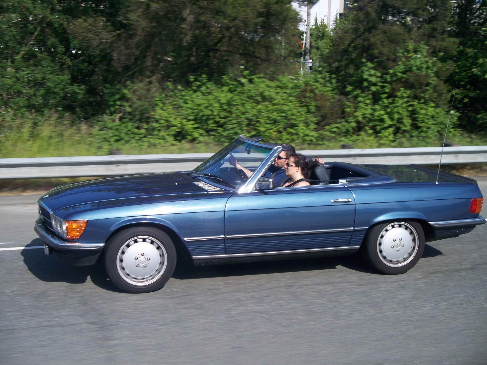
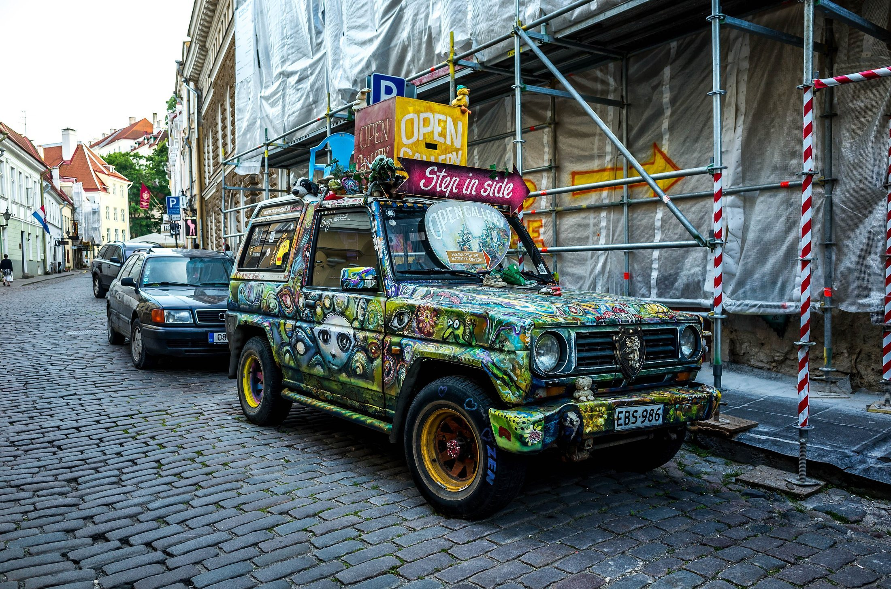
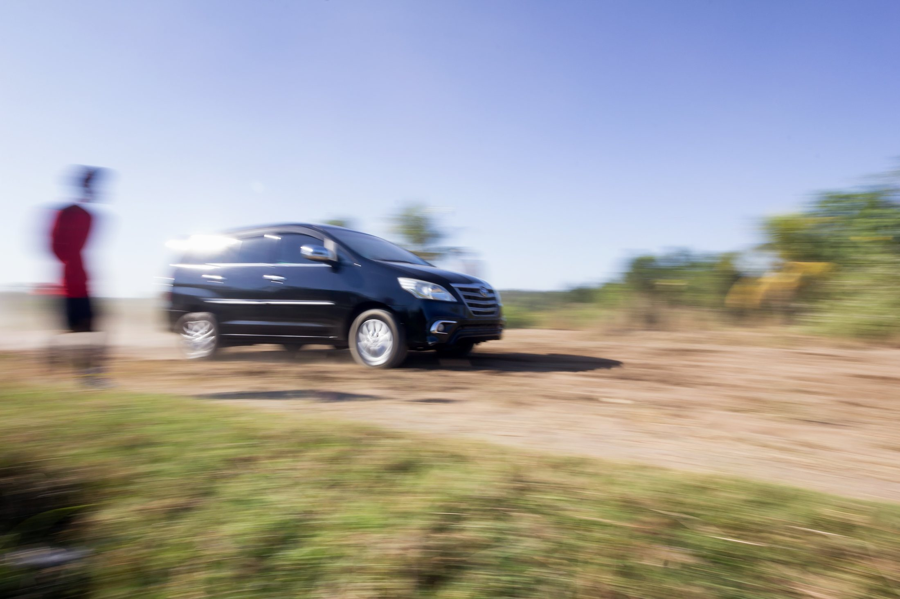
Cars do not all look the same. Some are small. Some are tall. Some have open tops.
Round tires touch the road. The wheels roll, roll, roll.
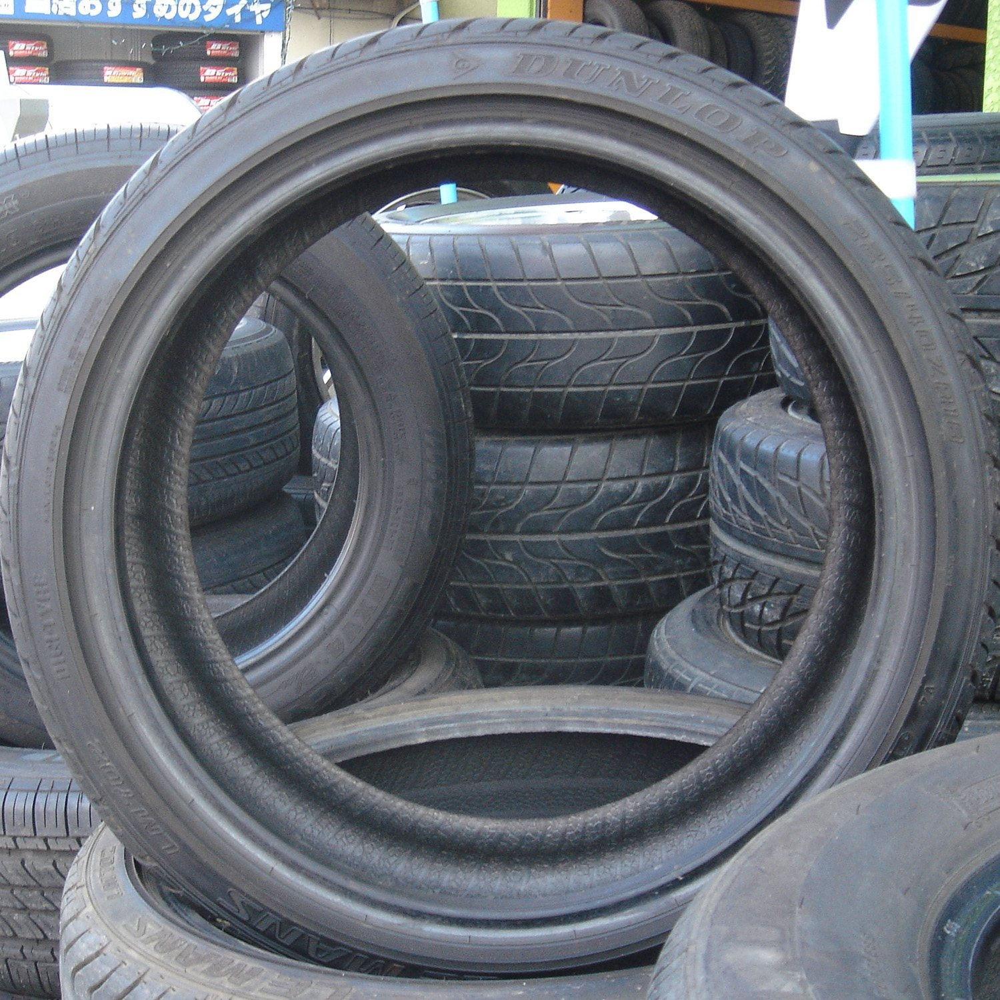
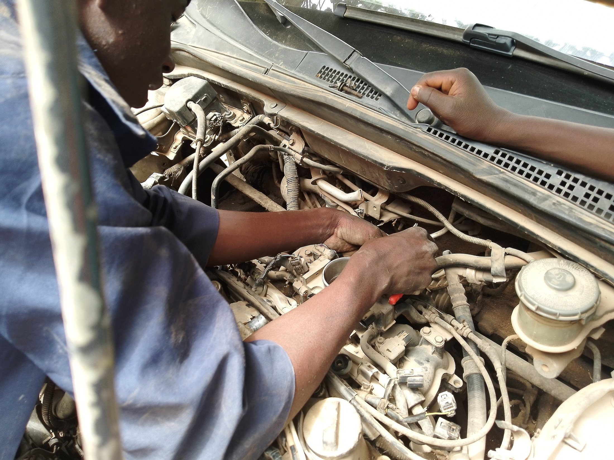
A car is a machine. Under the hood, parts work together to help the car move.
People buckle up before they ride. Click! A seat belt helps keep riders safer.
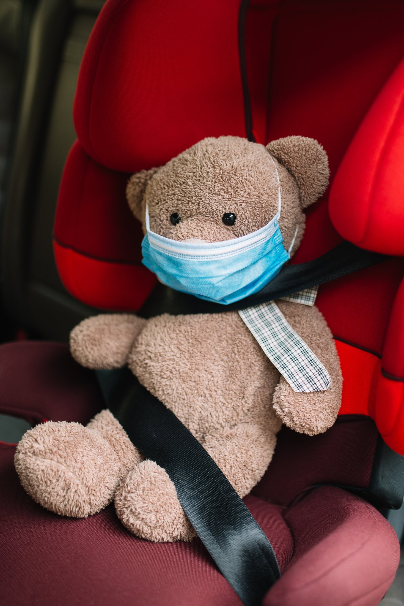
Some cars fill up with fuel. Some cars plug in and use electricity.
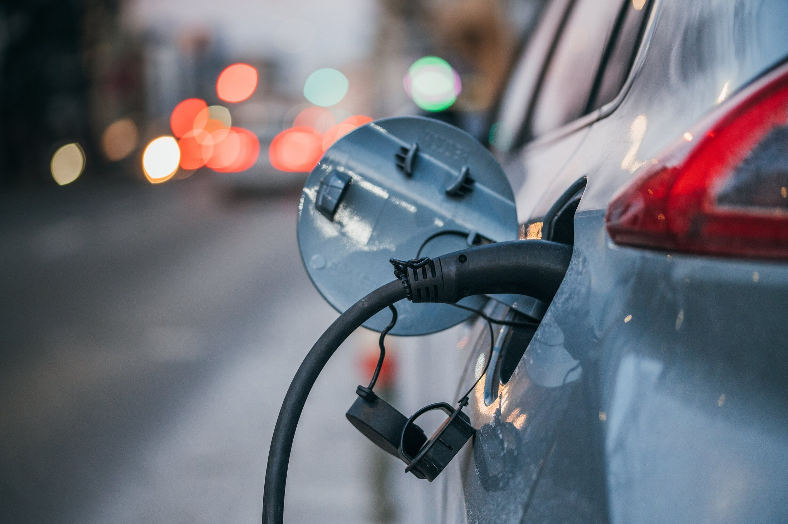
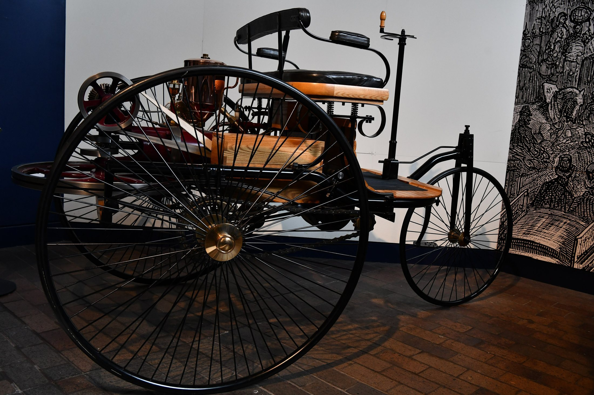
Long ago, cars looked different. This early car had big wheels and an open shape.
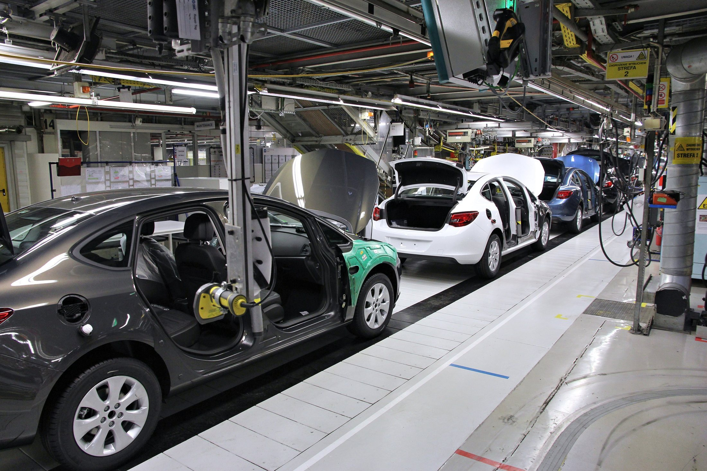
In a factory, many parts become a car. One part. Another part. Wheels. Seats. Then a car!
Cars need care. People check the parts, wash off dirt, and help the car work well.
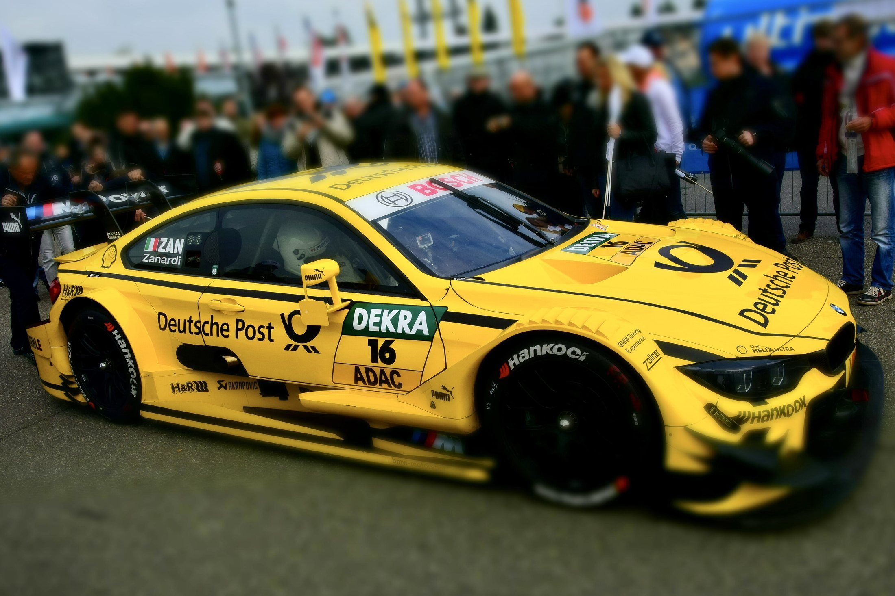
Some cars are race cars. They go fast on special tracks with trained drivers and safety rules.
Cars are useful. People keep learning how to make travel safer, cleaner, and less crowded.
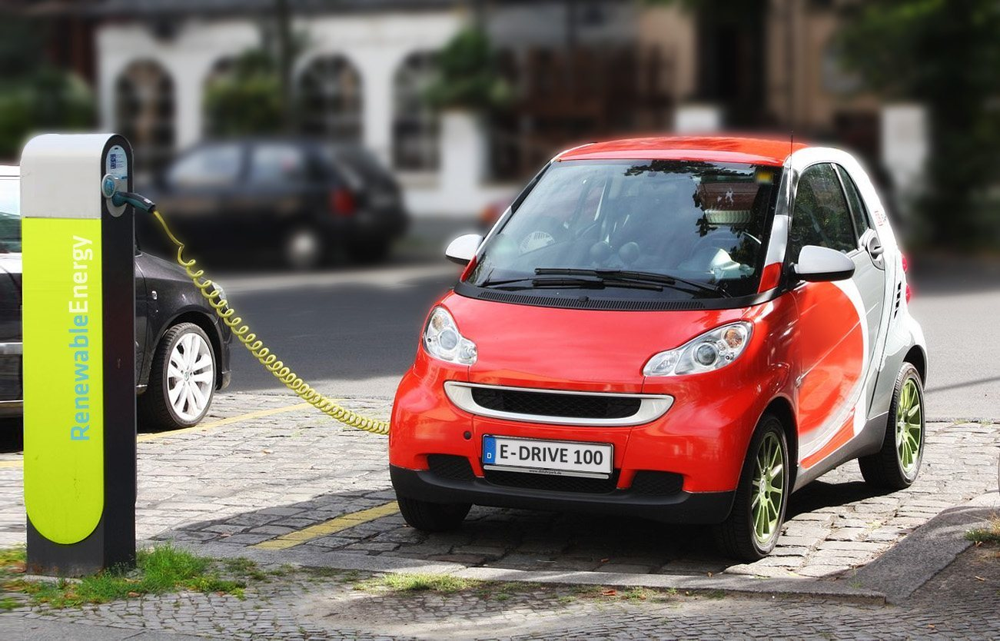